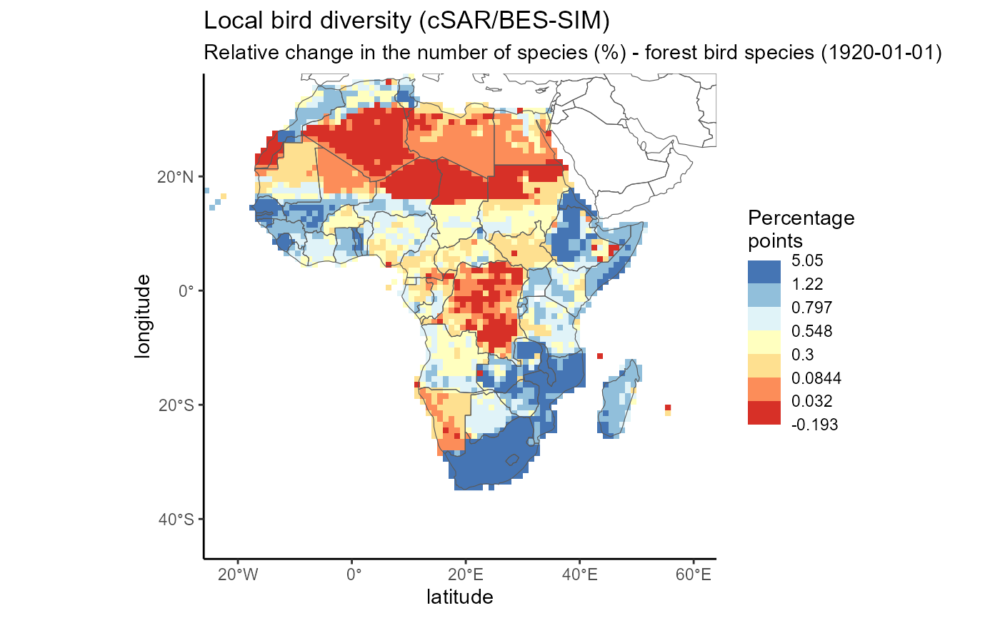
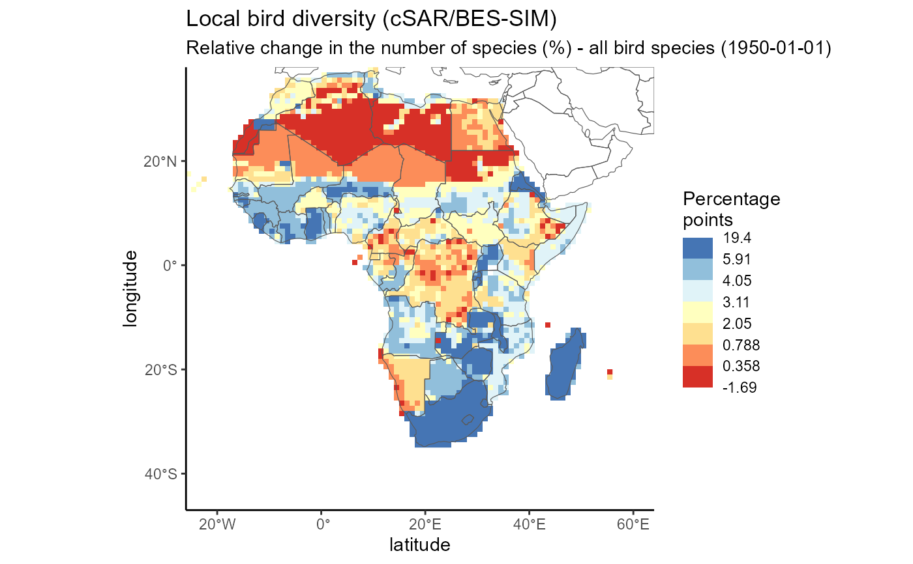

Map plot of the data of one timestep in one datacube of an EBV netCDF.
ebv_map(
filepath,
datacubepath = NULL,
entity = NULL,
timestep = 1,
countries = TRUE,
col_rev = FALSE,
classes = 5,
scenario = NULL,
metric = NULL,
all_data = FALSE,
ignore_RAM = FALSE,
verbose = TRUE
)Character. Path to the netCDF file.
Character. Optional. Default: NULL. Path to the datacube
(use ebv_datacubepaths()). Alternatively, you can use the
scenario and metric argument to define which cube you want to access.
Character or Integer. Default is NULL. If the structure is 3D, the entity argument is set to NULL. Else, a character string or single integer value must indicate the entity of the 4D structure of the EBV netCDFs.
Integer or character. Select a timestep. Either provide an integer value that refers to the index of the timestep (minimum value: 1) or provide a date in ISO format, such as '2015-01-01'.
Logical. Default: TRUE. Simple country outlines will be plotted on top of the raster data. Disable by setting this option to FALSE.
Logical. Default: FALSE Set to TRUE if you want the color ramp to be the other way around.
Integer. Default: 5. Define the amount of classes (quantiles) for the symbology. Currently restricted to maximum 11 classes (allowed maximum for palette RdYlBu is 11).
Character or integer. Optional. Default: NULL. Define the
scenario you want to access. If the EBV netCDF has no scenarios, leave the
default value (NULL). You can use an integer value defining the scenario or
give the name of the scenario as a character string. To check the available
scenarios and their name or number (integer), use
ebv_datacubepaths().
Character or integer. Optional. Define the metric you want to
access. You can use an integer value defining the metric or give the name
of the scenario as a character string. To check the available metrics and
their name or number (integer), use ebv_datacubepaths().
Logical. Default: FALSE. The quantiles are based on the one timestep you chose (default). If you want include the full data of the datacube to produce several maps that are based on the same color scale, set this argument to TRUE (to allow for viusual comparison between entities or timesteps. Does not cover different datacubes.)
Logical. Default: FALSE. Checks if there is enough space in your memory to read the data. Can be switched off (set to TRUE).
Logical. Default: TRUE. Turn off additional prints by setting it to FALSE.
Plots a map.
# \donttest{
#set path to EBV netCDF
file <- system.file(file.path("extdata","martins_comcom_subset.nc"), package="ebvcube")
#get all datacubepaths of EBV netCDF
datacubes <- ebv_datacubepaths(file, verbose=FALSE)
#plot a map for the 3rd timestep, divide into 7 classes
ebv_map(filepath = file, datacubepath = datacubes[1,1], entity = 1,
timestep = 3, classes = 7, verbose = FALSE)

ebv_map(filepath = file, entity = 'all bird species', timestep = "1950-01-01",
metric = 'Relative change in the number of species (%)',
classes = 7, verbose = FALSE)

# }